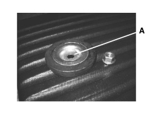
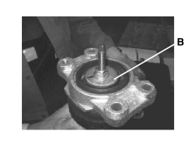

4420AG CHECK ON CORRECT FITTING OF SHOCK ABSORBER BUFFER PLATE
- Path
- Test > 44 SUSPENSION AND WHEELS > 4420 REAR SUSPENSION > 4420A REAR DAMPERS AND SPRINGS > 4420AG CHECK ON CORRECT FITTING OF SHOCK ABSORBER BUFFER PLATE
- Kind
- test / check procedure
- Applies to
- all engines; all production periods
- Interactive page
- https://sloeber94.github.io/elrnDB-aBrrSpdr/en/#/946001047
Applies to: all engines; all production periods
Following the
Op. 7040B18 LOAD COMPARTMENT LOAD PLATFORM SIDE TRIM ONE LH OR RH - R.R
remove the luggage compartment inner panels and check that the buffer plate (A) is fitted in the correct position as illustrated.

If the plate is not fitted in the correct position (B), refit it correctly as illustrated in the diagram.
